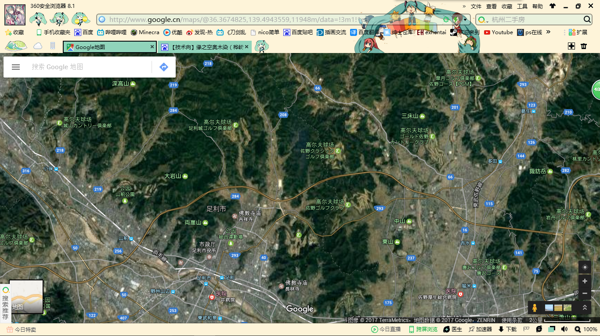
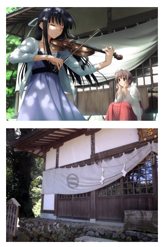
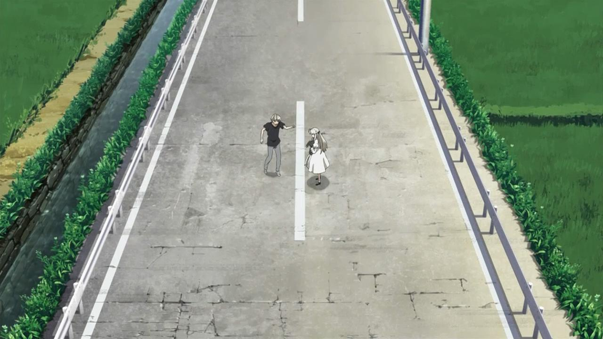
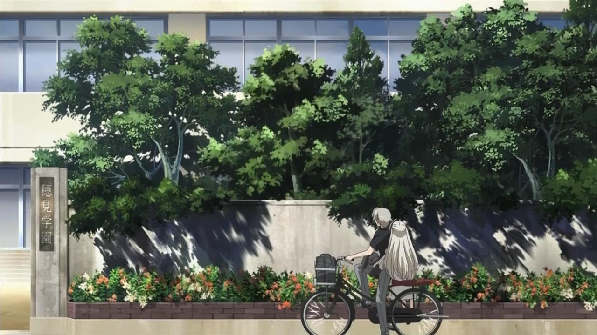
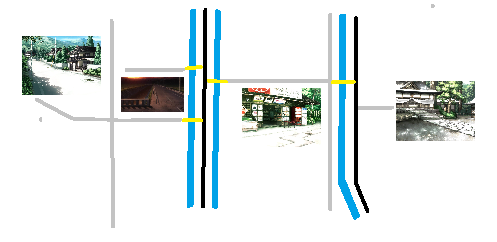
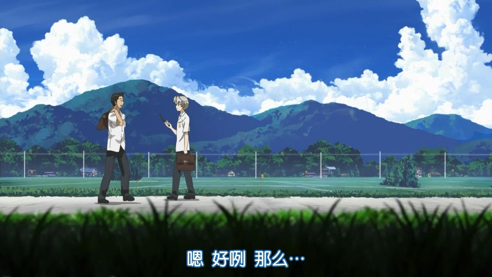

一楼上图，p站id=59539198
前排
2017-06-05 10:53 | ydeduigf:我在192楼哪里给出了正确的奥木染整个地图的答案,有必要的可以看看,没有错误的答案
这里是大绿葱，缘之空不知道看了几遍，只是忙于学业无法前往桦崎圣地巡礼，出于某些原因，我想按照箱根町和桦崎制作一张混合地图，当然会与现实有区别了，所以还是看我分析吧，一点一点慢慢来。
首先是各大动漫（游戏）中的场景的现实位置，我先准备一下，只求来人看看
一、地理位置
栃木县 足利市 桦崎町，只要你在谷歌地图搜索桦崎你就可以找到具体位置，这里是作者家乡，游戏cg有的是直接取景，而这里可以找到的一眼就能看出来的就是桦崎八幡宫。
栃木县 足利市 桦崎町，只要你在谷歌地图搜索桦崎你就可以找到具体位置，这里是作者家乡，游戏cg有的是直接取景，而这里可以找到的一眼就能看出来的就是桦崎八幡宫。

我们打开全景，因为没有去过，用别人的也不好意思。
这里是桦崎八幡宫入口，但是动漫中的叉依姬神社是桦崎八幡宫和箱根神社的结合，这个我们后面再讲，现在先找地理位置。 然后我们看一下游戏cg与现实的对比
这里是桦崎八幡宫入口，但是动漫中的叉依姬神社是桦崎八幡宫和箱根神社的结合，这个我们后面再讲，现在先找地理位置。 然后我们看一下游戏cg与现实的对比

这里是谷歌地图可以直接搜到的，我们打开谷歌地图，标记一下
2017-04-02 21:53 | 大绿葱♬:标记是在谷歌地球上
来人啊，给点动力吧
2019-07-05 08:21 | 贴吧用户_0QGeyDy:来了2020-04-17 19:15 | fcffvb66:来了2020-04-17 19:52 | fcffvb66:辛苦了！！2020-04-17 19:52 | fcffvb66:666666！
人多了我再继续
叉依姬神社游戏cg
来人啊，给点动力吧
接下来我们继续寻找，我们看到这么一间已经锁住的小房子
没错，这里就是伊福部八寻大姐的伊福部商店，我们看一下游戏cg
虽然看上去区别有点大就是了。。。我们同样在谷歌地球上标记一下，这里位于桦崎八幡宫东北方向
接下来是穗见学园，在设定中这里是奥木染临近小镇穗见市的学校，原来是女子学校，后来改为普通学校，现实中是足利女子高，所以我们搜索一下，发现这里离桦崎还是有点距离的
然后我们就看一下全景，顺便对比一下游戏cg，区别还是有的，比如外面的围墙
然后我们同样在谷歌地球上标记一下。。。略远啊。。。
赶上直播了
楼主稳！
好的朋友们，待会继续
我找了一下伊福部商店的对比图
接下来我们找到的这么一个地方，全景里面进不去，看上去是个大院子
 谷歌地图上也可以看得出来房子的地位
那么这里是哪里呢？嘿嘿，给你们看一下对比图你们就知道了
没错，这里是渚一叶大小姐的家，因为这样的房子实在是太好找了，我们继续谷歌地球标记
谷歌地图上也可以看得出来房子的地位
那么这里是哪里呢？嘿嘿，给你们看一下对比图你们就知道了
没错，这里是渚一叶大小姐的家，因为这样的房子实在是太好找了，我们继续谷歌地球标记
好了朋友们，楼主今天困了，所以更新明天继续，晚上可怜可怜我吧，看我等级，老爷们来打赏一下吧
顶顶
膜拜dalao
好了朋友们早上好！！！我们今天继续
如果敌人让你生气，那说明你还没有胜他的把握。如果朋友让你生气，那说明你仍然在意他的友情。
直播？
顶顶
顶起
我们先来看一下这张游戏cg，这是通学路的其中一张，我们仔细看一下
 然后我们拿出对比图，对比一下cg与现实的差别
我们想要找到这里，就要对场景进行分析，我们看一下有哪些相似的地方，我们用红线将其标出
很明显可以看到，对比中后面的房屋除了样式不同但是地理位置是一样的，都是位于远处山脚，而且在路的前面有这么一面凸透镜，并且可以看出，这条路是向右拐弯，综上，还原度极高的这个地方我们有依据可以找到，但是在哪里呢，我们接下来进行分析
然后我们拿出对比图，对比一下cg与现实的差别
我们想要找到这里，就要对场景进行分析，我们看一下有哪些相似的地方，我们用红线将其标出
很明显可以看到，对比中后面的房屋除了样式不同但是地理位置是一样的，都是位于远处山脚，而且在路的前面有这么一面凸透镜，并且可以看出，这条路是向右拐弯，综上，还原度极高的这个地方我们有依据可以找到，但是在哪里呢，我们接下来进行分析
头一次赶上直播
我们可以找一下这里在哪里，但是虽然桦崎不啊大，但是找起来还是困难，而且是在俯视角度，那么我们仔细分析一下。
首先是房子，我们可以分析一下屋顶，我将图放大来看，画出屋顶线 我们大致画出了这么一张关系图，我们来看一下地图上有没有类似的地方 虽然说有点牵强，但是桦崎八幡宫东边确实是符合条件了，有路，有房子，有山，但是我们还是要来分析一下屋顶确定一下 我们看到其实是非常相似的，我们可以断定这里是取景地，最后我们来全景图看一下，证实自己的说法 没错！就是这里了！由于航拍导致凸透镜是看不见的，但在全景图下，我们就可以看到，这里就是取景地，既然知道了是这里我们就老样子，在谷歌地球上标出
首先是房子，我们可以分析一下屋顶，我将图放大来看，画出屋顶线 我们大致画出了这么一张关系图，我们来看一下地图上有没有类似的地方 虽然说有点牵强，但是桦崎八幡宫东边确实是符合条件了，有路，有房子，有山，但是我们还是要来分析一下屋顶确定一下 我们看到其实是非常相似的，我们可以断定这里是取景地，最后我们来全景图看一下，证实自己的说法 没错！就是这里了！由于航拍导致凸透镜是看不见的，但在全景图下，我们就可以看到，这里就是取景地，既然知道了是这里我们就老样子，在谷歌地球上标出
6666666
six six six
然后看下一张，这是一条日常走的路
 同样的，我们看一下对比
这个也是现实存在的，还原度也是相当高的，一样，分析一下
这次的路是向左拐，左前方是房子，右边也是房子，右前方还有一颗树，这里我们接下来换一种方法分析
同样的，我们看一下对比
这个也是现实存在的，还原度也是相当高的，一样，分析一下
这次的路是向左拐，左前方是房子，右边也是房子，右前方还有一颗树，这里我们接下来换一种方法分析
赶上直播，楼主厉害👍
我决定这次用影子分析法。
作为理科生，虽然地理属文科，但是大学地理是理科。所以我们来看一下地球与太阳的关系 地球绕太阳旋转有一个平面为黄道面，地球自转赤道有一个平面为赤道面，黄赤有一个大小为23度的交角称为黄赤交角，由于当时有个星球撞上的正在公转的地球，将地球装歪同时地球开始自转，随后影子分析法就成为了一种有效的方法。
我们都知道，由于地球自西向东旋转，倒是我们感觉太阳东升西落，然而我们中国与日本由于都在北半球，所以某几个月正午时分，太阳看上去是在我们南边 我们从另一个方面分析，中国人的房子的大门大多数是朝南的，因为这样可以最大限度照射到阳光，所以在特定的时候，无论东北还是西北，物体的影子永远都是朝向北方。
这样就对了，缘之空的设定时间是在夏天，拍摄的照片也是春夏时节，所以影子是朝北的，接下来继续看我分析
作为理科生，虽然地理属文科，但是大学地理是理科。所以我们来看一下地球与太阳的关系 地球绕太阳旋转有一个平面为黄道面，地球自转赤道有一个平面为赤道面，黄赤有一个大小为23度的交角称为黄赤交角，由于当时有个星球撞上的正在公转的地球，将地球装歪同时地球开始自转，随后影子分析法就成为了一种有效的方法。
我们都知道，由于地球自西向东旋转，倒是我们感觉太阳东升西落，然而我们中国与日本由于都在北半球，所以某几个月正午时分，太阳看上去是在我们南边 我们从另一个方面分析，中国人的房子的大门大多数是朝南的，因为这样可以最大限度照射到阳光，所以在特定的时候，无论东北还是西北，物体的影子永远都是朝向北方。
这样就对了，缘之空的设定时间是在夏天，拍摄的照片也是春夏时节，所以影子是朝北的，接下来继续看我分析
暂时有点事情所以我待会来分析
楼主辛苦了
顶
厉害了我的lz
所以我们一起来看一下找张照片的影子方向
显然，前面那片影子是前面那颗大树的，影子向左边，所以太阳在右边，但是太阳这个时候应该在我们的南边，所以左边就是北边，照片所正对的方向是东边
所以按照上北下南左西右东我们画一张大致的地图
我们就按这个来寻找这个地方，这个真的是远在天边近在眼前。。。
我们看一下全景图吧，就是这里没有错了
我们谷歌地球标记一下，作者也是有够懒的，走几步就是两张cg。。。
顶起，还在直播
在有游戏cg对比图的情况下，我们已经标记的地点
666
接下来我们走的稍微远一点，前往叉依姬神社后面的湖中，也就是位于神奈川县箱根町的芦之湖，我们要前往的是箱根神社。
我们可以看一下游戏cg与实景的对比图
因为叉依姬神社是两个神社的结合体，我们后面再说，我们主要还是标记一下
哇赶上直播了！顶楼主！
顶楼主！加油，顶楼主
顶
接下来我们来看一下这张cg
看上去是一个商店街，并且是带有拱顶的，这种拱顶商店街，日语叫アーケード，这里是在大小姐线春日野悠带着渚一叶来玩的地方，其原型必定在大城市，所以我们可以查找一下资料
找了一下发现我们找到，在京都的三条，有一个三条会商店街，所以我们可以在谷歌地图上查看一下
但是这里离东京也太远了吧！！！如果是按设定这里未免太远了，而且cg中地面时铺好地砖的，这里是完全平的路面，所以我觉得这里不是，应该要再找一下
以后去巡礼就用这贴了双击666
双击666膜拜大佬
在去过桦崎圣地巡礼过的朋友们，会在这么一个地方拍照并对比
而且这里地面也是铺好的，看上去很像是cg的地方，但是这里在哪里呢？有没有什么可以找的线索？
有了，右上角有个浅草别馆的字样，难道是在浅草寺附近？
我们搜索一下附近的商店
这边有一个商店，一看就会发现有一些问题，左下角的这条路为什么看上去有顶棚
我们通过全景图来看一看到底是不是这里
对，没错，没有错了，就是这里！我们分析一下，浅草寺在东京，在桦崎之下，箱根之右，按照设定也不远，而且东京也是大城市，那么这里被当成缘之空取景地也算有理有据了，我们来标记一下
2019-08-22 12:12 | 我不能侮辱你:浅草寺的左边（我当时不知道具体的方向，但是面对浅草寺的话，商业街就在右边，所以如果是按照浅草寺来说的话，算是左边）确实有带顶棚的商业街
然后我看看还有没有可以找到的地方，稍等
我们看一下这张cg
这张在网上是没有对比图的，但是我觉得应该有实地取景，我们同样用光影分析法，画出一张大致的地图
但是这里在哪里我还是没有找到，所以也希望小伙伴帮我一下
晚上我去瞎逛，所以今天晚上我就晚点更新
地图分析ing，但是我要出门了
666,楼主加油！
这是我家后面的公路，只不过没有奥木染的神韵，不过这里人也挺少的，比较安静，好想去一次桦崎。。。顺带一提，油菜花开。
2017-08-06 23:19 | ◎沧泉:据说南方油菜花开会有“芳香”
其实主要是来放飞自我的，与其坐在电脑前，不如出门走走看看，今天妹妹不想出门，所以也就自己出来走了
2019-08-27 18:26 | 🌀Zero:妹妹。。羡慕
暂时出门逛逛，晚上继续
顶顶
回到家了，继续继续
接下来再看，我们看这一张cg
这个地方在现实中有对比图吗，其实是有的
但是我们可以找到的参考，只有右边的围栏而已，并且没有光影，我们只好是慢慢找了
好在有实景，否则可能这里就是瞎画的了
好在有实景，否则可能这里就是瞎画的了
2017-04-03 19:30 | 大绿葱♬:左上角有房子，这里也是参考
但是这里我找了半天也没有找到，天哪，绝望
直接开始下一个算了
这个是动漫第二集2:34的截图
这个地方就直接标记吧，因为太好找了
 顺便全景图给你们看一下
顺便全景图给你们看一下
好了我们开始第二部分，按照上面的我们已经找到了现实对应的一些场景，大家去圣地巡礼的时候就可以更方便的查找了，至于一些没找到的我会在后续找到了再补充，我们接下来就要分析动漫中这些地方到底是怎么样的了。所以我们开始吧
厉害
首先开始的就是叉依姬神社，我们先来看一下动漫的截图
第二集10:01 第二集10:06到10:09（合并大图） 第二集10:12 通过这三张图我们可以明显的发现，原来的桦崎八幡宫前面加了一个非常长的台阶走廊，这个台阶走廊其实是箱根神社的
第二集10:01 第二集10:06到10:09（合并大图） 第二集10:12 通过这三张图我们可以明显的发现，原来的桦崎八幡宫前面加了一个非常长的台阶走廊，这个台阶走廊其实是箱根神社的
楼主六炸了，收藏慢慢看
我的天，怎么不加精
那个，你刚刚说，妹妹不想出门。。。国欠妹的表示羡慕
暖一个
接下来再看后面的动漫截图
第四集13:18到13:23（合并大图） 还记得入口右侧的小路吗，那里是通往叉依姬神社后面湖上鸟居的路，我们还可以看到动漫中的叉依姬神社仅仅是将桦崎八幡宫和箱根神社在地理平面的平移结合，连方向也没有换过
第四集13:18到13:23（合并大图） 还记得入口右侧的小路吗，那里是通往叉依姬神社后面湖上鸟居的路，我们还可以看到动漫中的叉依姬神社仅仅是将桦崎八幡宫和箱根神社在地理平面的平移结合，连方向也没有换过
我们接下来看下一张动漫截图
第一集16:56 对比一下游戏cg，动漫这里多了一个车站，动漫中这里曾经是幼时春日野悠和依媛奈绪相遇的地方，这个是一个小区别
对比一下游戏cg，动漫这里多了一个车站，动漫中这里曾经是幼时春日野悠和依媛奈绪相遇的地方，这个是一个小区别
第一集16:56
然后是这里
第二集3:01 右边有一个小，这个也是游戏cg没有的，在大小姐线春日野悠与渚一叶有剧情，这也是一个小区别
第二集3:01 右边有一个小，这个也是游戏cg没有的，在大小姐线春日野悠与渚一叶有剧情，这也是一个小区别
2017-04-03 23:30 | 大绿葱♬:右边有一个小祭坛，打字没打进去
然后我们看一下穗见学园，这是足利女子高的平面图
我们同样看一下动漫截图
第四集4:19 虽说这是有原型的但是这改动也是有点大啊。。。。。。
第四集4:19 虽说这是有原型的但是这改动也是有点大啊。。。。。。
2019-08-22 08:53 | 🌿莓🌸:不觉得右上角那个更像吗
留名
这是游戏中的车站，动画中也有，但是现实中并没有对应，这可能是虚构的一个地点了
第一集3:11
 第六集12:20
第六集13:38
第六集12:20
第六集13:38
这里是商店以及自行车出租点，但是也不知道具体在哪里
第一集6:21 唯一可能就是这里了，不过并不知道这里是不是就是取景地，我们暂时放在一边
第一集6:21 唯一可能就是这里了，不过并不知道这里是不是就是取景地，我们暂时放在一边
2017-04-06 00:04 | 蓝白-地球:不是买的吗，为什么说是出租点？
今天差不多就是这样，明天我们来看几个重要地点在设定中的具体位置，在前面我没能找到的取景地也麻烦有能力的小伙伴的帮助了，今晚就酱，困死了
每日一顶
upup厉害了
大家早上好啊
日常一拍
早上就应该晨练，虽然晚了点就是了
好了来吧，我们继续，接下来就开始分析动漫中各大主要地点的地理位置
我们先来寻找一下大关系，首先就是从叉依姬神社和伊福部商店的位置入手，首先看一下现实中的位置
叉依姬神社在伊福部商店的西南方向，我们看一下动漫中的这张截图
第二集11:24 这里我们看出实际上动漫中叉依姬神社是在伊福部商店西北方向，所以我们大致的画一下
第二集11:24 这里我们看出实际上动漫中叉依姬神社是在伊福部商店西北方向，所以我们大致的画一下
真的强，准备报哪所大学啊
2017-04-04 11:43 | 大绿葱♬:我已经在读大学了
接下来我们通过第一集看一下春日野兄妹从火车站出发到春日野医院的路上各大地点的位置
车站出来并没有画面表示从哪个方向，但是我们看一下截图
第一集3:17 我们仔细看一下电线杆的方向，然后画一张大致图（我吧电线杆画在右边，黑线） 之后这是走在公路上的截图
第一集3:45
车站出来并没有画面表示从哪个方向，但是我们看一下截图
第一集3:17 我们仔细看一下电线杆的方向，然后画一张大致图（我吧电线杆画在右边，黑线） 之后这是走在公路上的截图
第一集3:45

两人往下走，电线杆在右边，所以我们发现往下拓展就可以啦
2017-04-06 13:32 | 蓝白-地球:有考虑游戏的吗？2017-04-06 13:36 | 大绿葱♬:回复 龙忆梦神 :还没有，我这里是以动画为主
然后我们看一下下面的截图
第一集5:01 第一集5:58 第一集7:00 天女目瑛为大家买东西是往左边走的，之后春日野悠想带着春日野穹看一下其他地方，也是向左骑行，但是这里没有电线杆做参考，姑且把这里当做是向下走的，我们画上去 然后看下一张截图
第一集7:05 这里也是，从右边来左边走，前面我截过第四集的图，如果按春日野兄妹走的方向往下，那么电线杆确实在右边，所以我们同样画上去，注意左边有条公路
这里也是，从右边来左边走，前面我截过第四集的图，如果按春日野兄妹走的方向往下，那么电线杆确实在右边，所以我们同样画上去，注意左边有条公路
第一集5:01 第一集5:58 第一集7:00 天女目瑛为大家买东西是往左边走的，之后春日野悠想带着春日野穹看一下其他地方，也是向左骑行，但是这里没有电线杆做参考，姑且把这里当做是向下走的，我们画上去 然后看下一张截图
第一集7:05

第一集7:33
2017-04-04 12:07 | 缘之空73:赶上直播了
好了我先去吃个饭，下午要回学校了，所以不知道下午可不可以继续
厉害了 膜拜大佬
膜拜大佬
膜拜大佬啊，直播结束？
99
100是我的了！！！！！！！
收藏收藏
我们继续，动漫中春日野兄妹的骑行还没有结束，我们看一下这张截图
第一集7:50 通过自行车方向可以推测出其实是从右边过来的，也就是说我们要合并一下图来说明了 也就是说应该这样才对，那我们姑且就先这样，然后我们再分析一下后面的
也就是说应该这样才对，那我们姑且就先这样，然后我们再分析一下后面的
第一集7:50 通过自行车方向可以推测出其实是从右边过来的，也就是说我们要合并一下图来说明了
接下来春日野兄妹是往伊福部商店的这个方向骑行的
第一集8:11 第一集8:18
这里春日野兄妹从这里下来，来到下一个地方
第一集8:18
这里春日野兄妹从这里下来，来到下一个地方
第一集8:29 前面其实就是依媛奈绪的家了，这里在现实没有找到对应的地点，但是我们还是暂时把这里给画上去.
第一集8:11
第一集8:29 前面其实就是依媛奈绪的家了，这里在现实没有找到对应的地点，但是我们还是暂时把这里给画上去.
接下来等我到了学校再说吧，晚上分析，但是明天一天满课，所以后面原谅我缓慢的更新进度吧。。。
对了，求顶，谢谢
顶
666
朋友们。。。学校到了，开电脑，继续继续
我们继续来看
第一集8:44 春日野兄妹二人前往了这个地方，也就是我画的大致地图图往上
第一集8:37 最终兄妹二人来到了春日野医院，我们来看一下医院的外部
第一集17:30 第一集17:36 第一集17:41
通过这三张我们可以画出一个大致图
第一集17:41
通过这三张我们可以画出一个大致图
第一集8:44 春日野兄妹二人前往了这个地方，也就是我画的大致地图图往上
第一集8:37 最终兄妹二人来到了春日野医院，我们来看一下医院的外部
第一集17:30 第一集17:36
2017-04-06 00:31 | 蓝白-地球:这里好像有点问题2017-04-06 10:42 | 大绿葱♬:回复 龙忆梦神 :什么问题(O_O)？
然后就是一个哪条路通往哪里了，首先看一下之前的图
第一集17:36 通学路骑车回来的依媛奈绪撞到春日野悠，于是就有了春日野悠骑车将依媛奈绪带回的剧情，此时是向右骑行的
通学路骑车回来的依媛奈绪撞到春日野悠，于是就有了春日野悠骑车将依媛奈绪带回的剧情，此时是向右骑行的
第一集17:38 此时两人从坡上下来，这里是春日野兄妹从车站过来的方向，所以可以由此判断来画出大致图 当然只是大致，后面会适当变的
第一集17:36
第一集17:38 此时两人从坡上下来，这里是春日野兄妹从车站过来的方向，所以可以由此判断来画出大致图 当然只是大致，后面会适当变的
2017-04-06 00:32 | 蓝白-地球:是不是连接错了？2017-04-06 10:42 | 大绿葱♬:回复 龙忆梦神 :是错了，这里只是确定一下位置，具体分析在后面，后面再改2017-04-06 12:16 | 蓝白-地球:回复 初音之兄 :他们两的家好像就是隔壁，只是门口朝向的问题2017-04-06 12:22 | 大绿葱♬:回复 龙忆梦神 :对，但是后面我还要分析一下朝向问题，因为还是要改，后面的事了
今晚还有晚自习。。。妈个鸡，晚自习八点结束，我要晚一点来更新了
大家晚上好，我放学了，继续。。。
虽然说大致位置已经搞定了，但是还存在一些bug，在动漫中人物从一处到另一处，那么按照顺序来是有问题的，所以为了修复这些bug，我们要开始将这些地方的具体位置给标记下来，比较连几条通学路还没有放进去
首先我们把叉依姬神社和伊福部商店的位置摆好
黑色为山脚的公路，蓝色为河，灰色为泥路，黄色为桥，然后我们看这张截图
第一集8:11 仔细看远处有一条公路，这里是之前没有仔细去看的，我们把它加上去
第一集8:11 仔细看远处有一条公路，这里是之前没有仔细去看的，我们把它加上去
2017-04-06 00:43 | 蓝白-地球:他们去那逛了，那么晚才到家？2017-04-06 10:43 | 大绿葱♬:回复 龙忆梦神 :动漫没有描述，只好yy了2020-03-25 20:37 | 贴吧用户_5K3UK6V:lz不见了wc
这条公路应该是主干道，所以我们可以看出实际上那条忽略的公路才是前往穗见学园的公路，但是比起这个，我们要把公路那个通学路的位置给确定下来，我们分析下
第四集3:06 伊福部八寻为了寻找天女目瑛从右侧跑过来，应该是从伊福部商店方向过来的
第七集9:45 春日野悠前往依媛奈绪的家，走的应该是左边的桥
由此我们可以大致画出这个场景的大致位置
第四集3:06 伊福部八寻为了寻找天女目瑛从右侧跑过来，应该是从伊福部商店方向过来的
第七集9:45 春日野悠前往依媛奈绪的家，走的应该是左边的桥
由此我们可以大致画出这个场景的大致位置
厉害了，，ddd
接下来我要准备一下继续开始分析了，而且每天是一天的满课，所以更新速度要慢一点了，希望见谅，礼拜五下午没课，不出意外的话每天都会分析一点，不能继续那我就水经验了
大家晚安
支持楼主。。。希望每天都能看见更新
大家早上好。。。正在上课的我
不想上课了。。。我想看缘之空了
上课分析八阿哥ing
上课自顶
终于下课了，中午就一个半小时，所以等我吃完饭，我们继续。。。
按照之前的分析我们可以其实可以吧依媛奈绪的家给放到地图上

但是之后放春日野医院的时候就会出现之前说的bug，我们后面来看一下第一集17:36
向右这个方向是前往依媛奈绪家的方向
第一集17:38 但是好像是从通学路过来的，可是左边也是通向春日野医院的路
但是好像是从通学路过来的，可是左边也是通向春日野医院的路
第一集17:15 第一集17:16 依媛奈绪撞上春日野悠是在公路通学路，而且是在左边，那么从方向来看应该是春日野医院那张图左边是连接的这里？？？
第一集17:38
第一集17:15 第一集17:16 依媛奈绪撞上春日野悠是在公路通学路，而且是在左边，那么从方向来看应该是春日野医院那张图左边是连接的这里？？？
怎么这么快要上课了。。。我还没解决完呢。。。
顶啊！！！！
上课了。。。QAQ
我们现在假设一下，春日野悠回家是从公路走的，所以公路连接的应该是依媛奈绪家的方向，从方向来看依媛奈绪确实是从左边桥的方向骑过来，那么春日野悠骑自行车带着依媛奈绪回去还要经过自己家，最有可能就是从桥的方向骑回去，春日野医院下面那条路连接的就是撞车点，而且从距离上看，这个撞车点应该离通学路那个场景还有一段距离，最后就是骑车回来的方向应该不是前面的大坡而是从左边开始，如果这样分析，那么这几个场景的位置也就说得通了
由此我们画出大致图
但是我们这样就没有办法解释为什么上课绕远路了，不过这件事我们后面再说
接下来看一下学校的路
第四集0：32 这里是天女目瑛回家的方向，但是这个方向不是从商店过来吗？？？难道又出bug了？？？
第四集0：32 这里是天女目瑛回家的方向，但是这个方向不是从商店过来吗？？？难道又出bug了？？？
赶上直播了？！
那么我们其实是可以猜测，骑自行车的时候其实是绕圈子的，毕竟回家是不太可能绕路的，而且学校后面室友一条公路的，那么我们只能是把大致图中的学校方向反过来
所以我们画出大致图
我们接下来我们可以分析一下几条通学路的位置
第二集2:53
第二集3:01 这里就是有小祭坛的通学路，我们再来看这张
这里就是有小祭坛的通学路，我们再来看这张
第十一集18:20 前面是通学路，也就是说在这个方向室友一条中间长草的小路，并且这个方向是学校，那么我们可以画出大致图 然后我们把它加入我们的地图中

这个时候的中里亮平是在回头叫依媛奈绪，我们看一下依媛奈绪在哪第二集3:01
第十一集18:20 前面是通学路，也就是说在这个方向室友一条中间长草的小路，并且这个方向是学校，那么我们可以画出大致图 然后我们把它加入我们的地图中
2017-04-07 02:40 | 蓝白-地球:回复 初音之兄 :你不是说亮平回头叫奈绪，也就是说在红色的图里是从上往下走的2017-04-07 08:23 | 大绿葱♬:回复 龙忆梦神 :对呀2017-04-07 11:42 | 蓝白-地球:回复 初音之兄 :学校在上面，他们上学不是向上走吗？2017-04-07 12:23 | 大绿葱♬:回复 龙忆梦神 :对呀，是往上走的啊
我们看下一个地方
第一集16:56 这里是车站，春日野悠被依媛奈绪撞之前的画面，所以前面是公路
第十集13:13 春日野悠与依媛奈绪约会时等待公交车，公交车的方向是向右的。。。等一下
两边都是公路。。。难道又是bug？？？
第一集16:56 这里是车站，春日野悠被依媛奈绪撞之前的画面，所以前面是公路
第十集13:13 春日野悠与依媛奈绪约会时等待公交车，公交车的方向是向右的。。。等一下
两边都是公路。。。难道又是bug？？？
那既然是这样，我们只好是当做春日野悠绕了一下路了，因为公交车是要往公路上开的，按照这个想法我们来画地图
今天更新了一点点，明天不一定会更新，因为明天一天都要上课，所以请多多见谅。。。
真诚感谢楼主的的分析一下楼主确实很努力，也很厉害，鼓励and支持
厉害了我的楼主
我不想上课了。。。我想睡觉QAQ
中午有一个半小时可以睡觉。。。我那个时候再更新好了
支持
日常顶帖，支持楼主。
对了，全面没有找到的现实对应的场景你们有眉目吗。。。
差不多是将一些大致的地方放好了，但是我们仍然要改一下
第八集18:26
 第八集18:39
春日野悠和依媛奈绪两个人在春日野医院门口，而看上去门口可以看见一条公路
第八集18:39
春日野悠和依媛奈绪两个人在春日野医院门口，而看上去门口可以看见一条公路
第八集18:37 但是两个人看上去又是前后站的。。。
？？？？？春日野医院门口正对着一条公路？？？？？
第八集18:37 但是两个人看上去又是前后站的。。。
？？？？？春日野医院门口正对着一条公路？？？？？
我们继续来看
第二集14:19 春日野悠从叉依姬神社到伊福部商店在回家，巧遇坐车回来的渚一叶，于是两人一起来到春日野医院，注意此时轿车的方向，左边这条弯路应该是链接公路的
第二集15:14 渚一叶此时回家，这个时候车是向左边开的，所以左边应该也是通往渚一叶家的
第二集14:19 春日野悠从叉依姬神社到伊福部商店在回家，巧遇坐车回来的渚一叶，于是两人一起来到春日野医院，注意此时轿车的方向，左边这条弯路应该是链接公路的
第二集15:14 渚一叶此时回家，这个时候车是向左边开的，所以左边应该也是通往渚一叶家的
那么我们就来分析一下，不排除公路的相交，但是按照这样的顺序，春日野医院的医院入口的门应该是朝向右（我画的图上）的，左边的弯路应该有分叉的小路，一边连接公路，一边连接渚一叶家的，而且从顺序看，春日野医院的位置应该还要往下移动，所以我们要开始比较大的改动了
当然这张以后还是要改的，因为还要很多问题
2017-04-06 22:23 | 蓝白-地球:从上往下第三图有问题，上学路上亮平回头看奈绪，她就站在那里。2017-04-06 23:11 | 大绿葱♬:回复 龙忆梦神 :没有问题呀？？？？？？2017-04-07 02:30 | 蓝白-地球:回复 初音之兄 :上学是从家向学校走，可按照地图是学校向家走2017-04-07 02:39 | 蓝白-地球:回复 初音之兄 :在139楼那
自顶
接下来我们来看渚一叶大小姐的家，前面可以看到渚一叶的家连接春日野医院左边的弯路
第四集10:53 第四集11:02 渚一叶的父亲出门，所经过的应该是叉依姬神社。。。等等，又是bng？？？
第四集10:53 第四集11:02 渚一叶的父亲出门，所经过的应该是叉依姬神社。。。等等，又是bng？？？
我们来看一下这里
第二集14:25 稍后是回家吗？我们知道渚一叶学过小提琴，所以此时应该是去学小提琴，所以渚一叶家应该是在叉依姬神社下面
第二集14:25 稍后是回家吗？我们知道渚一叶学过小提琴，所以此时应该是去学小提琴，所以渚一叶家应该是在叉依姬神社下面
那么我们来加一下渚一叶的家
还有的就是商店和车站了，最后我们一起加进去
至此，这张大致图就完成了，重要的地方已经标记了，其他一些小路可以暂时忽略不计了
大家晚安，求顶
2017-04-07 01:33 | 夜兴雨戈🌿:晚安，辛苦了
大赞楼主！
139楼是第一图还是第二图那样连上去的？
2017-04-07 15:08 | 大绿葱♬:第一图
游戏里有许多对制作这个有帮助的东西，需不需要参考？
2017-04-07 21:30 | 大绿葱♬:游戏我已经好久没玩了，所以要等我再去玩过一遍之后再去修改地图，但参考还是会的，只是地图bug会增多而已2017-04-08 13:00 | 蓝白-地球:回复 初音之兄 :跟游戏比起来，动漫少了好多剧情，有些地方动漫里没有去过2017-04-21 20:13 | 蓝白-地球:回复 初音之兄 :楼主怎么不更了？2017-05-28 08:40 | 蓝白-地球:回复 QQ932024214 :但是里面有很多详细的数据，可能有帮助
其实动漫有些地方是因为原来游戏没表达清楚所以是虚构的 。。。不过楼主真是666

帖子看会继续更新，但是，要等我把游戏温习玩之后...
2017-04-08 20:55 | 蓝白-地球:恐怕还要好久，早上开始玩，到晚上一条线还没有玩完，玩完全部大概要多久？2017-04-09 14:18 | 大绿葱♬:回复 龙忆梦神 :我不知道。。。2017-04-10 10:31 | Kousuka:回复 龙忆梦神 :5 条线的长短各不相同，有长有短（当然，某条线路的长短是相对其他线路的长短而言）。即使不间断，亦不快进，平均也须要 6~8 个钟头吧。2017-04-11 12:40 | 蓝白-地球:回复 Kousuka :一天玩一条线就好了2017-05-08 21:42 | roitr:6662017-05-28 15:22 | 啥507:两三条线我玩了大概一个月吧
顶顶
日常顶帖。楼主加油！
真的不错我看过最6的
楼主好稳
楼主真心厉害！
不要沉
厉害了大佬
楼主厉害
厉害，我挂vpn卡的要死
2017-05-03 23:35 | -幻小梦-:蓝灯不错
顶
麻吉哑巴库内
怎么了
好贴dd
dd
顶顶顶顶 大佬继续啊
顶
看完了，好神奇
楼主很可以
班长和女仆是邻居（我TM记不住名字）
分析得还不错,但是还是有些地方欠缺有错误,这里我们就揭秘一下正确答案吧.
2018-10-14 19:45 | 淡而无味🌌:这地图有高清的么？官网怎么进？
这就是桥本隆给出的设定,推测得还不错,大略推出来了

2017-07-08 22:40 | 滑稽萌新👺:这是官方的？2017-07-20 18:27 | 大春日野兔:回复 汪志远9 :是的，这图是官的
大佬太强了！
哇。楼主真的厉害。看看自己的等级觉得我在这个吧里没干啥造福大众的就是水经验了
穹想回家
6666
巨 巨佬这波分析精准的我给你跪了
这波分析精准的我给你跪了楼主6的一批。。
dddd
mark一下
顶
楼主就消失了
lz从此消失
必须顶
不见了
楼主好强
最难找的是穹和悠的家，当时找了一下午，感觉每一家都差不多。。。
不见了
upup
.......
6666666
要是楼主能在手绘地图上加上GPS坐标就完美了
大家好，你们的楼主回来了，现在我要开始准备用mc还原奥木染了，到时候可能开个新帖子什么的，请期待啦！
2018-03-20 23:58 | 古古怪怪223:资瓷！2018-03-22 00:01 | 蓝白-地球:楼主你都失踪大半年了，终于等到你了2018-03-22 13:13 | Kwzyzº:吼啊2018-03-27 10:00 | -幻小梦-:强烈滋瓷！
刚刚发个帖子被系统删帖了惊呆了......
2019-07-06 00:58 | 蝶舞之彩蝶:看来楼主是又失踪了啊
你忙吧，我吃柠檬
2018-04-02 11:10 | -幻小梦-:正常...网上有贴吧关键词过滤器，你可以去用2019-04-12 07:53 | 逝去的-温柔:楼主你又失踪了？2020-02-16 15:16 | 么么小懵:大佬你还在吗....0202年了
好棒！
这张图可以看看
2018-03-26 21:07 | 大绿葱♬:???
什么?
楼主加油！
重拾游戏真是满满的感触
楼主图片能否搬运，会注明出处
大佬nb
不更了？？
厉害了(ง •̀_•́)ง
佩服佩服，楼主过与常人的空间想象能力
dd
dd楼主好棒！
楼主也太强了吧！！！！
不要信动漫，以游戏为准
666
666
6666
好贴，点赞插眼
点赞插眼，lz太强了
牛逼